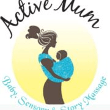

Kids Activities in Castleknock
Browse 10 kids activities and classes in Castleknock. Compare schedules, ages and pricing below, or contact a provider directly to book.
Irish Dance Classes
Classes open to children aged 3+. Every Wednesday at 5:30 - 6:30pm
View full details →
KidCREATE Arts & Crafts
KidCREATE is dedicated to encouraging children to explore their creativity through arts and crafts. Established with the mission of providing a nurturing and inspiring environment, our classes are designed to impart not only artistic skills but also to enhance cognitive development, problem-solving skills, and self-expression. I am committed to making every class a fun and enriching experience. In addition to our regular classes, we also offer workshops, camps, themed events and parties. At KidCREATE, we believe that every child is an artist in the making. Join us and watch your child’s creativity flourish! Term classes begin 9th September 2024 in Castleknock / Carpenterstown, Dublin 15 area. Visit www.kidcreate.ie for more information.
View full details →Pop-up play café at The Lock Keeper
Join our popup playcafé every second Tuesday from 12pm to 3pm at The Lock Keeper in Ashtown, Dublin 15. Babies play on our clean, safe play area with premium toys while you connect with other parents or simply relax and enjoy a hot coffee or lunch. No fee to play and no need to book. Just show up and enjoy!
View full details →
Active Mum .ie
Spend quality time with your baby - learn how to give your baby a massage, and meet other local mums for friendship and support. There are 3 classes on offer: Baby Massage, Story Massage & Sensory Play, and Massage in Schools.
View full details →

Castleknock Hurling and Football Club
Castleknock Hurling and Football Club has been a cornerstone of the Carpenterstown, Castleknock, and Clonsilla communities since 1998, offering Gaelic football, hurling, camogie, and ladies football for all ages. With top-class facilities at Somerton Park and additional pitches in Porterstown, St Catherine's Park, and Tír na nÓg, the club provides a welcoming environment for players of all levels. For younger children, the Nursery runs every Saturday morning in Tír na nÓg, catering to boys and girls aged 4 to 8, with a focus on fun, teamwork, and skill development - the perfect introduction to Gaelic games.
View full details →

ClapHandies PlayLabs - Dublin
The PlayLabs are weekly developmental sensory play classes for babies, wobblers and/or toddlers. The classes are designed to provide a fun and engaging environment for both children and adults! With music, learning, social interaction, and sensory play, you and your little one are sure to have a great time together. They are also a chance for children to socialise with children of their own age, while offering parents/caregivers the opportunity to get to know others in their area too. Baby PlayLabs (6 weeks - 7 months) - 55 minute class duration Wobbler PlayLabs (8 months - 15 months) - 50 minute class duration Toddler PlayLabs (16 months - 3.5 years) - 50 minute class duration We typically run toddlers at 9.45am/10am, wobblers at 10.45am/11am and babies at 11.45am/12pm - venue dependent. You can check out more information about our classes on our website: https://site.claphandies.com/ In addition to your term's booking, we also offer you 3 months free access to ClapHandies at Home which is an online resource filled with hours of follow-along music and guided playtime videos for you and your little ones to enjoy at home. So if you miss any of your classes during a term, you can run your own PlayLab at home or just tune in to have some extra fun during the week. If you are signing up for our Baby PlayLabs in particular, we also provide you with a link to our informative Baby Massage e-manual so you can continue practising the massage strokes at home.
View full details →

Claphandies
ClapHandies PlayLabs offer babies, wobblers and toddlers (birth to 3.5 years) a chance to play, meet other children and develop new skills. Sessions include music, song and rhyme time, and a class teaching the core baby massage techniques. We also focus on gross motor skills and language development, teaching baby sign language. The weekly classes offer a wide variety of engaging experiences tailored to the needs of each age group, and are also a chance for children to socialise with children of their own age, while giving parents/caregivers the opportunity to get to know others in their area too. Each term runs for 7 weeks, with a 50% sibling discount. Classes are offered in various locations across Ireland.
View full details →

B.A.N.T.S
With over 65 years of experience, B.A.N.T.S is Ireland's oldest theatre school, offering Speech and Drama classes for children and teenagers aged 4 to 18 in Dublin. Founded in 1951, the school has a rich legacy of excellence and a reputation for fostering a lifelong love of drama. Classes focus on building confidence, clear speech, and creativity, whether students are beginners or more advanced. Small class sizes ensure individual attention, and students have the opportunity to take grade examinations with Trinity College London and participate in solo and group competitions throughout the year.
View full details →Dublin Stage School
Dublin Stage School offers acting, singing, and dance classes for young performers aged 4 to 18 in Blackrock, Killiney, and Castleknock. Their professional coaching helps build confidence and creativity in a fun, safe, and supportive environment. Students have the opportunity to perform at prestigious venues like the Bord Gáis Energy Theatre, The National Concert Hall, and The Gaiety Theatre. They have also appeared in major stage productions such as Miss Saigon, Les Misérables, Matilda, and Joseph and the Amazing Technicolor Dreamcoat, as well as TV and film projects including Vikings, Penny Dreadful, and Angela's Ashes.
View full details →
Me & You Music
Me & You Music (suitable from 4 months to 6 years) is about playfully introducing the wonderful world of music and encouraging children to sing, dance, explore and, most importantly, have fun. Mischa takes her music classes and workshops all around Dublin.
View full details →No classes match your filters.